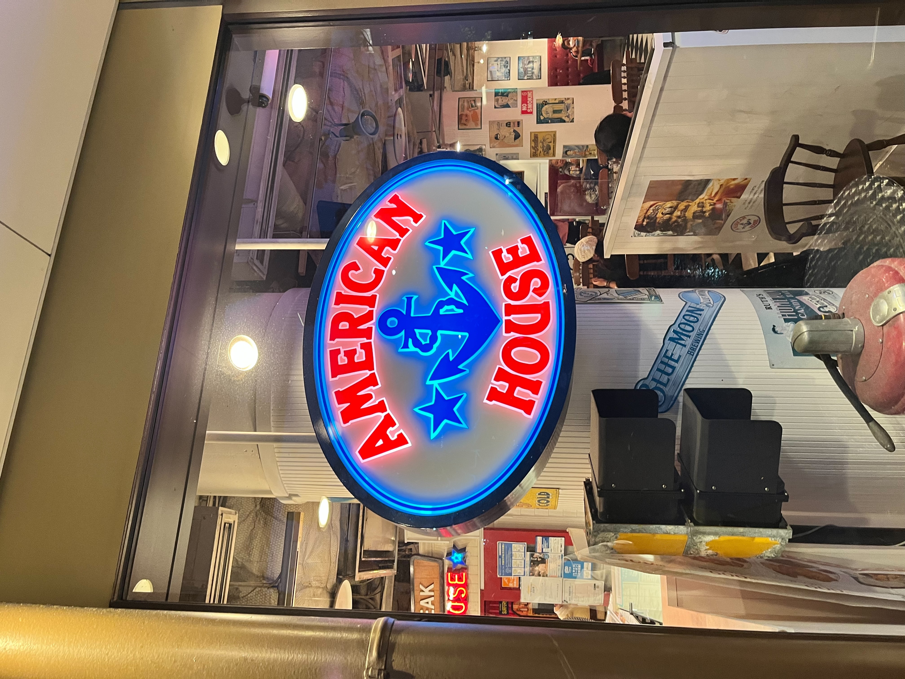
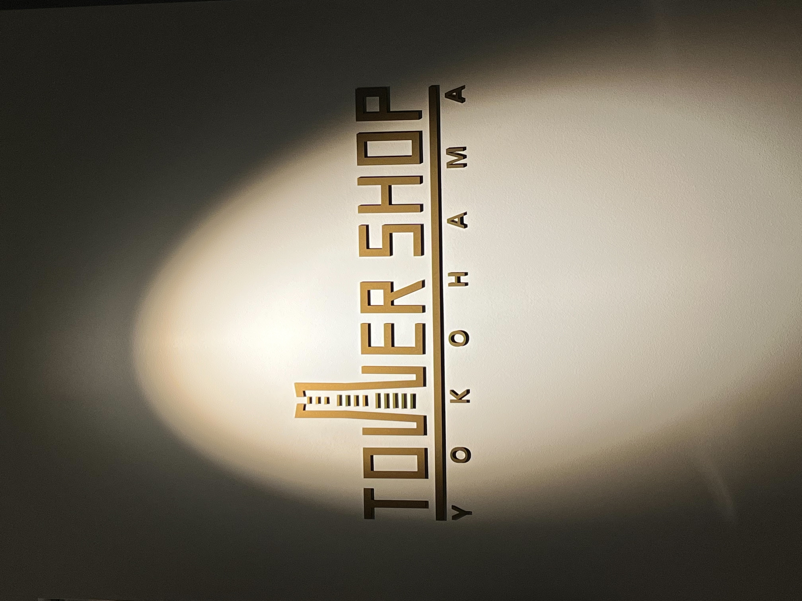

第2回 観察について
1.American House

みなとみらいクイーンズスクエアにあるアメリカンハウスというレストランの看板。
この看板はAmerikann Houseの文字と碇と星だけのシンプルな看板なので見やすい。
2.横浜くりこ庵

横浜駅西口5番街にある横浜くりこ庵というたい焼き屋さんの看板。
この看板はたい焼きのイラストを知り背景に描き、店名を加えただけのシンプルな構造になっていて見やすい。
3.Tower Shop Yokohama

スカイガーデンの69階にあるTower Shop Yokohamaの看板
この看板はTowerのWをランドマークの形にしているのでランドマークに関係があるとわかる。